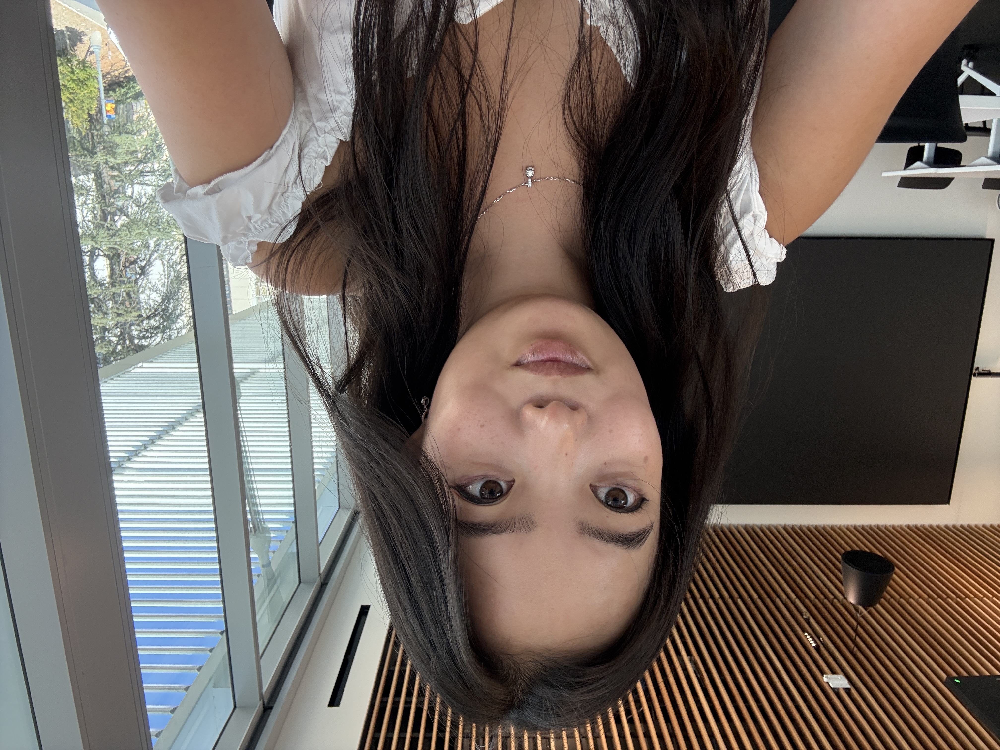
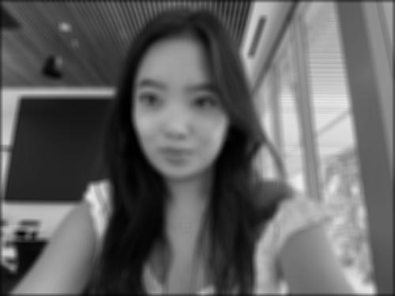
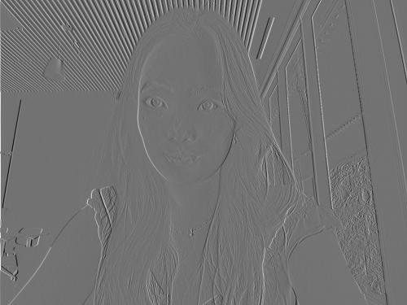
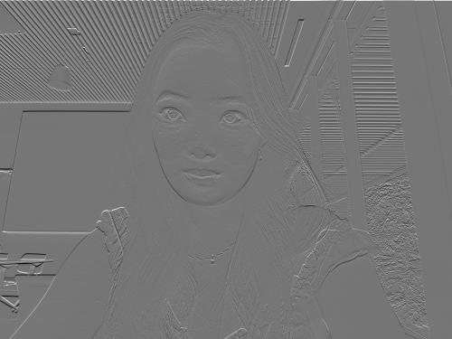

A convolution creates a new image by applying a kernel (matrix with varying weights and corresponding effects) to the original image. The kernel is applied to each pixel in the original image after getting flipped along the x and y axes, then getting multiplied and summed with the surrounding pixels to produce an output pixel. Examples of kernel effects include a matrix with equal weights (blurring effect) and a finite difference kernel (which uses subtraction to detect edges).
def padding(im, kh, kw):
top = kh // 2
bottom = (kh - 1) // 2
left = kw // 2
right = (kw - 1) // 2
H, W = im.shape
padded = np.zeros((H + top + bottom, W + left + right), dtype=np.float64)
padded[top:top + H, left:left + W] = im
return paddeddef convolution_four(im, kernel):
kh, kw = kernel.shape
k = kernel[::-1, ::-1] # flip the kernel
padded = padding(im, kh, kw)
H, W = im.shape
out = np.zeros((H, W), dtype=np.float64)
for i in range(H):
for j in range(W):
total = 0.0
for m in range(kh):
for n in range(kw):
total += padded[i + m, j + n] * k[m, n]
out[i, j] = total
return outdef convolution_two(im, kernel):
kh, kw = kernel.shape
k = kernel[::-1, ::-1]
padded = padding(im, kh, kw)
H, W = im.shape
out = np.zeros((H, W), dtype=np.float64)
for i in range(H):
for j in range(W):
out[i, j] = np.sum(padded[i:i + kh, j:j + kw] * k)
return outbox = np.ones((9, 9)) / 81.0
Dx = np.array([[1, -1]], dtype=np.float64)
Dy = np.array([[1], [-1]], dtype=np.float64)| Implementation | Runtime (9x9 box) | Relative to SciPy |
|---|---|---|
| Four loops | 5.397 s | ~151x slower |
| Two loops + NumPy | 0.716 s | ~20x slower |
scipy.signal.convolve2d |
0.036 s | 1x (baseline) |
| Kernel | Four loops vs SciPy | Two loops vs SciPy |
|---|---|---|
| 9x9 box | 8.88e-16 | 8.88e-16 |
| Dx = [1, -1] | 0.0 | 0.0 |
| Dy = [1, -1]T | 0.0 | 0.0 |



